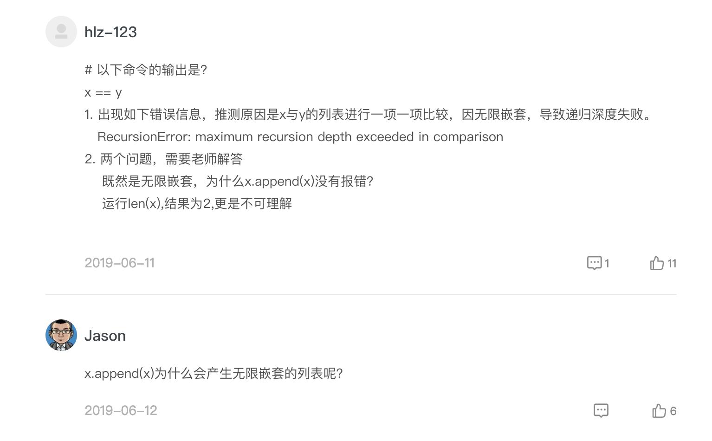
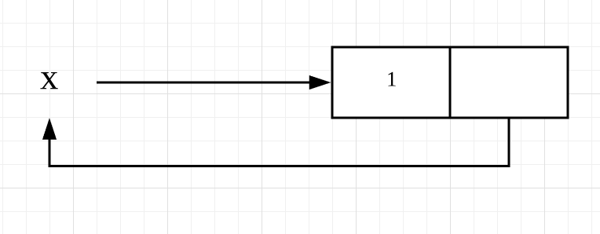
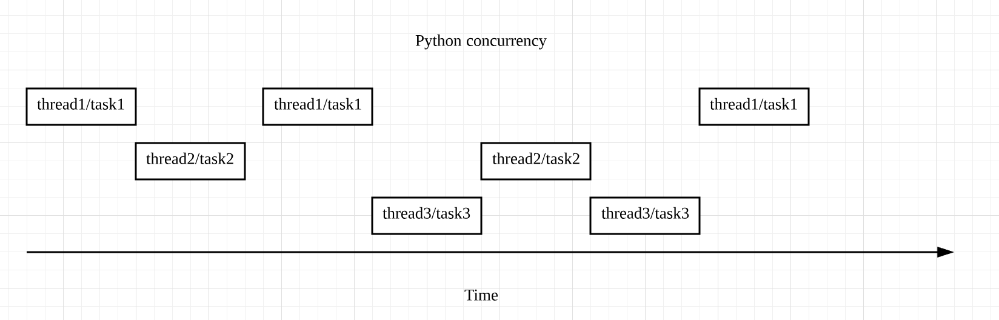

- 00 开篇词 从工程的角度深入理解Python.md
- 01 如何逐步突破，成为Python高手？.md
- 02 Jupyter Notebook为什么是现代Python的必学技术？.md
- 03 列表和元组，到底用哪一个？.md
- 04 字典、集合，你真的了解吗？.md
- 05 深入浅出字符串.md
- 06 Python “黑箱”：输入与输出.md
- 07 修炼基本功：条件与循环.md
- 08 异常处理：如何提高程序的稳定性？.md
- 09 不可或缺的自定义函数.md
- 10 简约不简单的匿名函数.md
- 11 面向对象（上）：从生活中的类比说起.md
- 12 面向对象（下）：如何实现一个搜索引擎？.md
- 13 搭建积木：Python 模块化.md
- 14 答疑（一）：列表和元组的内部实现是怎样的？.md
- 15 Python对象的比较、拷贝.md
- 16 值传递，引用传递or其他，Python里参数是如何传递的？.md
- 17 强大的装饰器.md
- 18 metaclass，是潘多拉魔盒还是阿拉丁神灯？.md
- 19 深入理解迭代器和生成器.md
- 20 揭秘 Python 协程.md
- 21 Python并发编程之Futures.md
- 22 并发编程之Asyncio.md
- 23 你真的懂Python GIL（全局解释器锁）吗？.md
- 24 带你解析 Python 垃圾回收机制.md
- 25 答疑（二）：GIL与多线程是什么关系呢？.md
- 26 活都来不及干了，还有空注意代码风格？！.md
- 27 学会合理分解代码，提高代码可读性.md
- 28 如何合理利用assert？.md
- 29 巧用上下文管理器和With语句精简代码.md
- 30 真的有必要写单元测试吗？.md
- 31 pdb & cProfile：调试和性能分析的法宝.md
- 32 答疑（三）：如何选择合适的异常处理方式？.md
- 33 带你初探量化世界.md
- 34 RESTful & Socket：搭建交易执行层核心.md
- 35 RESTful & Socket：行情数据对接和抓取.md
- 36 Pandas & Numpy：策略与回测系统.md
- 37 Kafka & ZMQ：自动化交易流水线.md
- 38 MySQL：日志和数据存储系统.md
- 39 Django：搭建监控平台.md
- 40 总结：Python中的数据结构与算法全景.md
- 41 硅谷一线互联网公司的工作体验.md
- 42 细数技术研发的注意事项.md
- 43 Q&A：聊一聊职业发展和选择.md
- 加餐 带你上手SWIG：一份清晰好用的SWIG编程实践指南.md
- 结束语 技术之外的几点成长建议.md
25 答疑（二）：GIL与多线程是什么关系呢？
你好，我是景霄。
不知不觉中，我们又一起完成了第二大章进阶篇的学习。我非常高兴看到很多同学一直在坚持积极地学习，并且留下了很多高质量的留言，值得我们互相思考交流。也有一些同学反复推敲，指出了文章中一些表达不严谨或是不当的地方，我也表示十分感谢。
大部分留言，我都在相对应的文章中回复过了。而一些手机上不方便回复，或是很有价值很典型的问题，我专门摘录了出来，作为今天的答疑内容，集中回复。
问题一：列表self append无限嵌套的原理

先来回答第一个问题，两个同学都问到了，下面这段代码中的x，为什么是无限嵌套的列表？
x = [1]
x.append(x)
x
[1, [...]]
我们可以将上述操作画一个图，便于你更直观地理解：

这里，x指向一个列表，列表的第一个元素为1；执行了append操作后，第二个元素又反过来指向x，即指向了x所指向的列表，因此形成了一个无限嵌套的循环：[1, [1, [1, [1, …]]]]。
不过，虽然x是无限嵌套的列表，但x.append(x)的操作，并不会递归遍历其中的每一个元素。它只是扩充了原列表的第二个元素，并将其指向x，因此不会出现stack overflow的问题，自然不会报错。
至于第二点，为什么len(x)返回的是2？我们还是来看x，虽然它是无限嵌套的列表，但x的top level只有2个元素组成，第一个元素为1，第二个元素为指向自身的列表，因此len(x)返回2。
问题二：装饰器的宏观理解
再来看第二个问题，胡峣同学对装饰器的疑问。事实上，装饰器的作用与意义，在于其可以通过自定义的函数或类，在不改变原函数的基础上，改变原函数的一些功能。
Decorators is to modify the behavior of the function through a wrapper so we don't have to actually modify the function.
装饰器将额外增加的功能，封装在自己的装饰器函数或类中；如果你想要调用它，只需要在原函数的顶部，加上@decorator即可。显然，这样做可以让你的代码得到高度的抽象、分离与简化。
光说概念可能还是有点抽象，我们可以想象下面这样一个场景，从真实例子来感受装饰器的魅力。在一些社交网站的后台，有无数的操作在调用之前，都需要先检查用户是否登录，比如在一些帖子里发表评论、发表状态等等。
如果你不知道装饰器，用常规的方法来编程，写出来的代码大概是下面这样的：
# 发表评论
def post_comment(request, ...):
if not authenticate(request):
raise Exception('U must log in first')
...
# 发表状态
def post_moment(request, ...):
if not authenticate(request):
raise Exception('U must log in first')
...
显然，这样重复调用认证函数authenticate()的步骤，就显得非常冗余了。更好的解决办法，就是将认证函数authenticate()单独分离出来，写成一个装饰器，就像我们下面这样的写法。这样一来，代码便得到了高度的优化：
# 发表评论
@authenticate
def post_comment(request, ...):
# 发表状态
@authenticate
def post_moment(request, ...):
不过也要注意，很多情况下，装饰器并不是唯一的方法。而我这里强调的，主要是使用装饰器带来的好处：
- 代码更加简洁；
- 逻辑更加清晰；
- 程序的层次化、分离化更加明显。
而这也是我们应该遵循和优先选择的开发模式。
问题三：GIL与多线程的关系
第三个问题，new同学疑惑的是，GIL只支持单线程，而Python支持多线程，这两者之间究竟是什么关系呢？
其实，GIL的存在与Python支持多线程并不矛盾。前面我们讲过，GIL是指同一时刻，程序只能有一个线程运行；而Python中的多线程，是指多个线程交替执行，造成一个“伪并行”的结果，但是具体到某一时刻，仍然只有1个线程在运行，并不是真正的多线程并行。这个机制，我画了下面这张图来表示：

举个例子来理解。比如，我用10个线程来爬取50个网站的内容。线程1在爬取第1个网站时，被I/O block住了，处于等待状态；这时，GIL就会释放，而线程2就会开始执行，去爬取第2个网站，依次类推。等到线程1的I/O操作完成时，主程序便又会切回线程1，让其完成剩下的操作。这样一来，从用户角度看到的，便是我们所说的多线程。
问题四：多进程与多线程的应用场景
第四个问题，这个在文章中多次提到，不过，我还是想在这里再次强调一下。
如果你想对CPU密集型任务加速，使用多线程是无效的，请使用多进程。这里所谓的CPU密集型任务，是指会消耗大量CPU资源的任务，比如求1到100000000的乘积，或者是把一段很长的文字编码后又解码等等。
使用多线程之所以无效，原因正是我们前面刚讲过的，Python多线程的本质是多个线程互相切换，但同一时刻仍然只允许一个线程运行。因此，你使用多线程，和使用一个主线程，本质上来说并没有什么差别；反而在很多情况下，因为线程切换带来额外损耗，还会降低程序的效率。
而如果使用多进程，就可以允许多个进程之间in parallel地执行任务，所以能够有效提高程序的运行效率。
至于 I/O密集型任务，如果想要加速，请优先使用多线程或Asyncio。当然，使用多进程也可以达到目的，但是完全没有这个必要。因为对I/O密集型任务来说，大多数时间都浪费在了I/O等待上。因此，在一个线程/任务等待I/O时，我们只需要切换线程/任务去执行其他 I/O操作就可以了。
不过，如果I/O操作非常多、非常heavy，需要建立的连接也比较多时，我们一般会选择Asyncio。因为Asyncio的任务切换更加轻量化，并且它能启动的任务数也远比多线程启动的线程数要多。当然，如果I/O的操作不是那么的heavy，那么使用多线程也就足够了。
今天主要回答这几个问题，同时也欢迎你继续在留言区写下疑问和感想，我会持续不断地解答。希望每一次的留言和答疑，都能给你带来新的收获和价值。
© 2019 - 2023 Liangliang Lee. Powered by gin and hexo-theme-book.